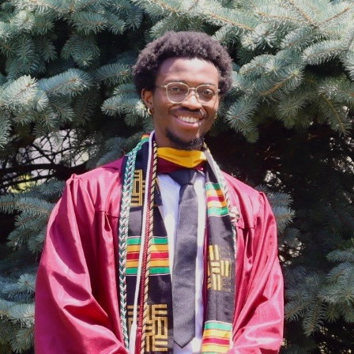
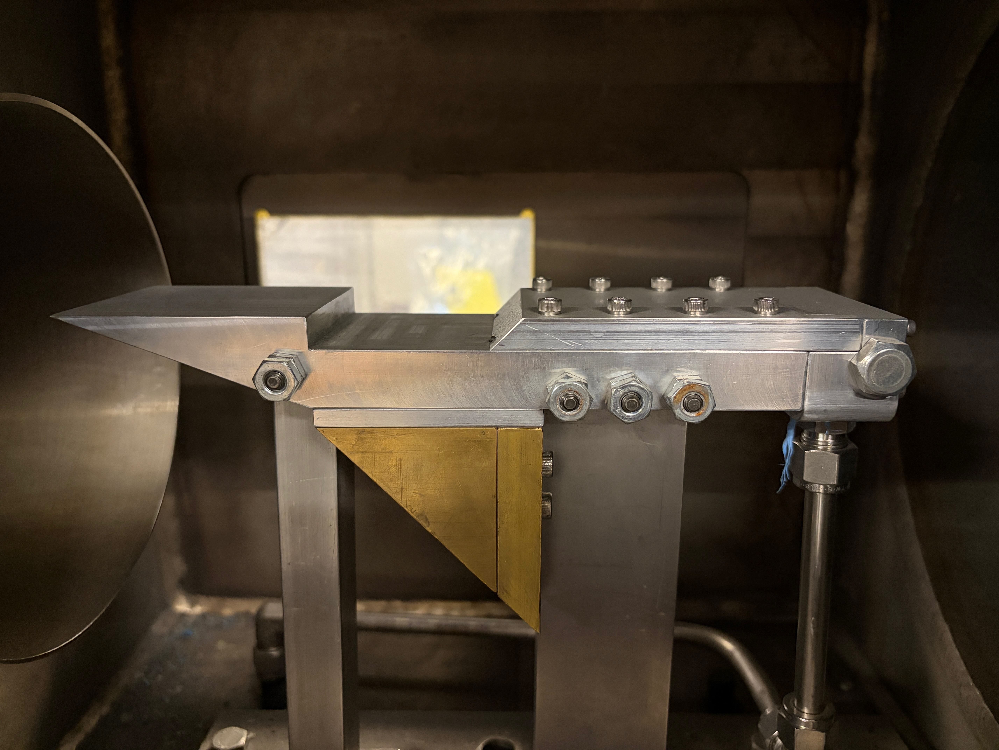
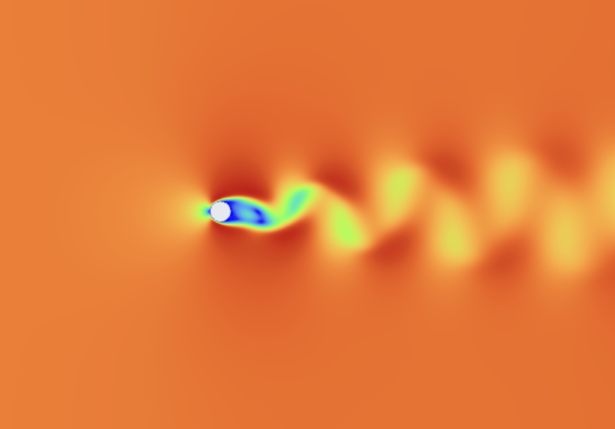
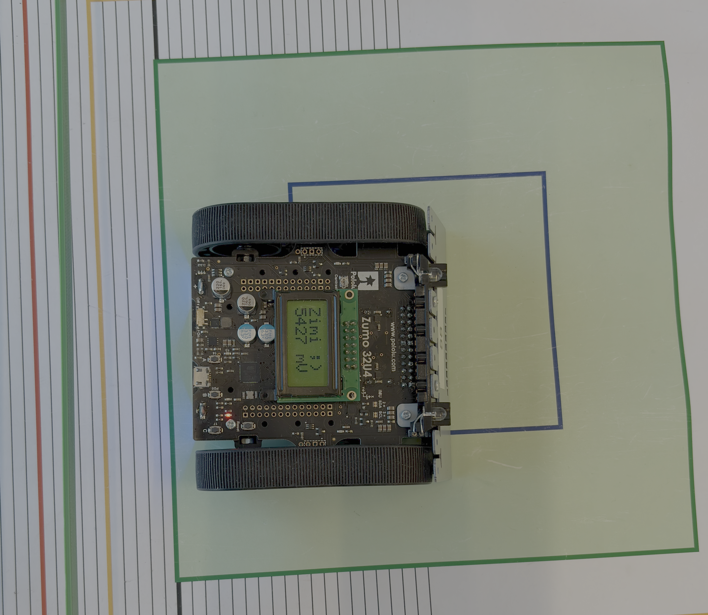
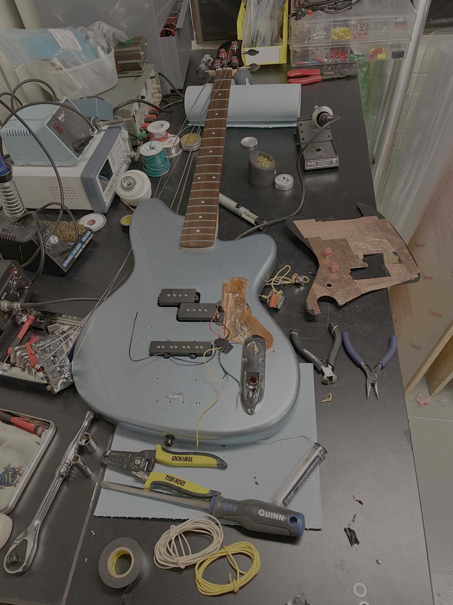
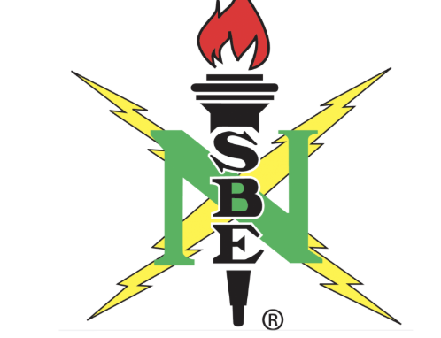
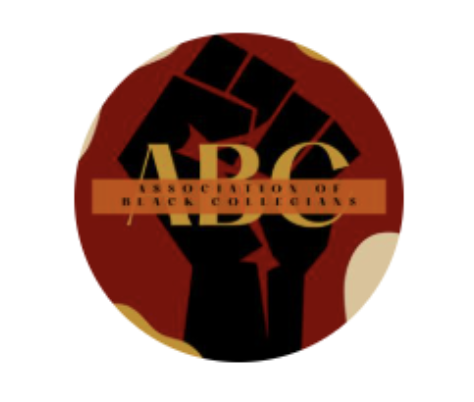
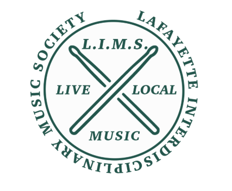
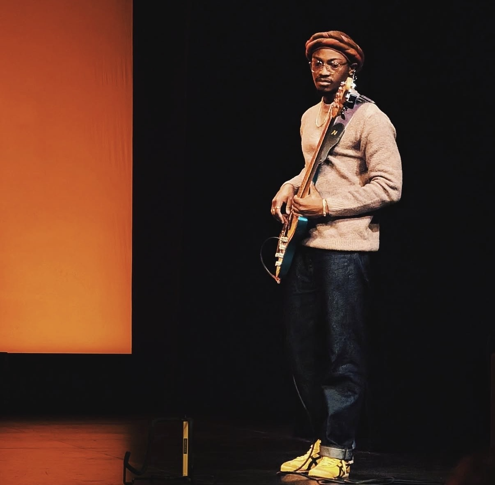

Hi, I'm
Ajani Martin
Mechanical EngineerBS Mechanical Engineering: Lafayette College
Class of 2026
MS Mechanical Engineering: University of Maryland
Class of 2028
BS Mechanical Engineering: Lafayette College
Class of 2026
MS Mechanical Engineering: University of Maryland
Class of 2028
Conducted experimental research in combustion and hypersonic propulsion by designing and manufacturing an aft wall fueled cavity flame holder for scramjet applications. Developed hands-on experience with the Lafayette College Hypersonics Laboratory, learning the proper operation and use of laboratory equipment and systems.
Utilized ANSYS Fluent to simulate fluid flow and formation of boundary layers around rocket stability systems, as well as the laminar and turbulent flows around various objects through Computational Fluid Dynamics simulation.
Supported the successful execution of performances at Lafayette College’s Williams Center for the Arts by maintaining and servicing technical equipment to ensure reliable operation throughout events.
Led specialized tours of the Engineering Department, showcasing department resources. Communicated with prospective and current students to support their transition into Lafayette College.


Investigated the effects of varying combustible gas injection locations within supersonic airflow using a cavity flame holder, a key component of a supersonic combustion ramjet (scramjet) engine. Analyzed how injection location and pressure influence fuel-air mixing, flame stability, and combustion propagation under high-speed flow conditions. Conducted experimental testing in the Lafayette College Hypersonics Laboratory using an expansion tube to simulate supersonic flow conditions through highly pressurized gases.

Analyzed fluid flow over rocket stability systems using computational fluid dynamics (CFD) to evaluate aerodynamic behavior and performance. Investigated laminar and turbulent flow around common geometries, including spheres, cylinders, and airfoils, while examining velocity profiles, pressure distributions, drag, and flow separation. Applied fluid mechanics principles to interpret simulation results and assess aerodynamic characteristics across varying flow conditions.

Developed and programmed an autonomous Pololu Zumo 32U4 robot using Arduino, implementing sensor-based control algorithms and feedback loops to independently navigate an unknown course, detect and avoid obstacles, and complete the course within a specified time limit.

Designed custom wiring diagrams to modify the electrical signal paths of guitars and basses, enabling personalized tone configurations tailored to individual playing styles. Applied knowledge of musical electronics and circuit design to troubleshoot, diagnose, and repair faulty instrument electronics.

Engaged in professional development, networking, and community building initiatives through workshops and organizational events. Collaborated with engineering students and industry professionals to strengthen career readiness skills, expand professional networks, and foster a supportive engineering community.

Served as Secretary and Treasurer of the Association of Black Collegians (ABC), helping foster an inclusive and supportive environment where students of color could connect, build community, and engage with one another. Managed the organization’s finances and coordinated funding for organizational events, ensuring resources were allocated effectively to maximize the quality and impact of events for members.

Served as President of the Lafayette Interdisciplinary Music Society (LIMS), a student organization dedicated to fostering an inclusive community for students with a passion for music, regardless of race, ethnicity, gender, or religion. Led the organization in hosting fundraisers, charity events, and community initiatives while collaborating with local businesses and organizations throughout Easton, PA. These efforts helped connect Lafayette students with the surrounding community while raising awareness and support for local charities and businesses.

Developed a passion for writing and performing music while in school. Performed as a member of a band that wrote and played original music at a variety of campus and community events throughout Easton, PA, including fundraisers, charity events, school productions, and recreational events. These experiences allowed me to combine my creativity and love for music with opportunities to connect with and perform for diverse audiences.